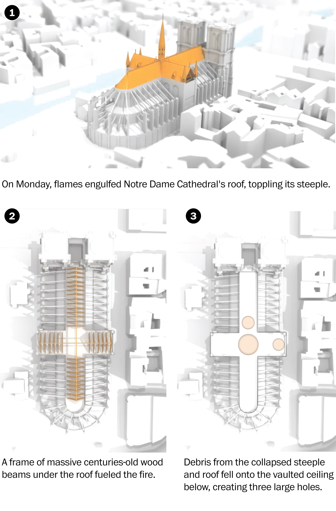
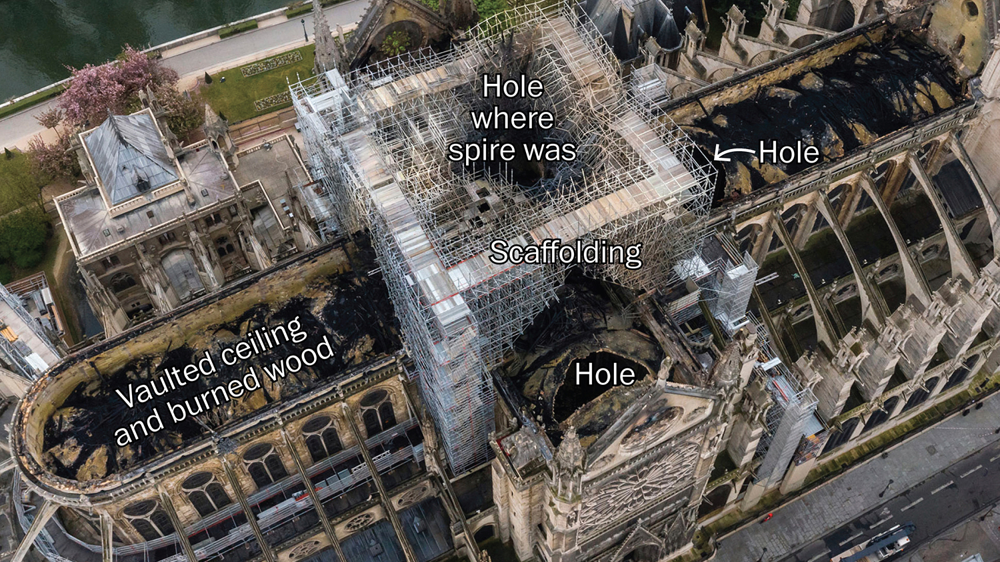

Rebuilding Notre Dame: The next steps for Paris’s famous cathedral
By Brittany Renee Mayes, Aaron Steckelberg and Lauren Tierney
April 18, 2019
Officials began inspecting the damage of Notre Dame Tuesday. They declared the cathedral structurally sound while identifying “some vulnerabilities,” according to French Deputy Interior Minister Laurent Nunez. Specifically, the vault and gable of the north transept were of concern. Inspectors are also worried about structural damage that may be hidden.
Kirk Martini, a professor at the University of Virginia School of Architecture with a doctorate from the University of California at Berkeley in structural engineering, said the transept is probably the greatest vulnerability. To ensure the structure is stable, additional shoring may be necessary after the full extent of the damage is assessed.


Limestone is a key building element of the structure, and stone is susceptible to damage from heat and water. “There may have been some damage to the stone, even the places that currently appear to be intact . . . because of the weaknesses of the material,” Martini said. “That’s a big unknown. . . . I don’t think anybody knows the extent of that damage.”
[Firefighters had a secret weapon when Notre Dame caught fire: A robot named ‘Colossus’]

“The plaza in front of the cathedral was built specifically to give a good viewing point,” he said. “It's not an accident that so many people have taken photographs of the front of the church.”
French President Emmanuel Macron hopes the country can rebuild Notre Dame within five years. With the scale of the project, Martini is skeptical that timeline will be met, even with the number of resources being promised for restoration. Hundreds of millions of dollars have already been pledged for the rebuilding efforts.
[World raises money for Notre Dame] How the cathedral will be restored is also up for debate. On Wednesday, Prime Minister Édouard Philippe announced an international competition to replace the iconic spire that collapsed into Monday’s blaze.
[Notre Dame fire updates]History of Notre Dame
Notre Dame is of geographic and cultural importance to Paris. It sits purposefully near the center of the city on a small island surrounded by the Seine River. It is also the landmark next to which all other Parisian monuments are measured.
Martin Moeller, senior curator for the National Building Museum in Washington, said it is not coincidental that Notre Dame is one of the most famous Gothic churches. “The plaza in front of the cathedral was built specifically to give a good viewing point,” he said. “It's not an accident that so many people have taken photographs of the front of the church.”

There is already a debate brewing about how the church should be restored. Whether the efforts will include building materials similar to destroyed in the fire or more modern materials will be up for more discussion once officials fully assess the damage, to the building and to its artifacts.
France honors Notre Dame firefighters; protects rose windowMuch of the art and relics were saved from the flames. The cathedral’s large stained-glass windows appear to be undamaged, and there’s a strong case for restoring the famed structure as closely as possible to its former glory.
Even the White House offered assistance in the rehabilitation of the cathedral. While Notre Dame is revered around the world, Moeller stressed the importance of considering how other catastrophic fires of major landmarks are handled.
[White House Notre Dame briefing]
In St. Landry Parish, La., three black churches burned down from arson within 10 days in late March and early April. Before Monday, a GoFundMe for the churches had raised just below $50,000 in rebuilding aid. After a Twitter campaign urged people to remember the Louisiana churches amidst the devastation of Notre Dame, the total skyrocketed to $1 million by Wednesday.
[Churches in Louisiana raise money for Notre Dame]“Obviously it's one of most famous buildings in the world,” Moeller said of Notre Dame. “But we want to make sure that people remember that there are other buildings that are important to other communities. It may not be as famous, but when tragedy strikes there it can be devastating to a particular community or a particular group of people, and sometimes it doesn't get the attention it deserves.”